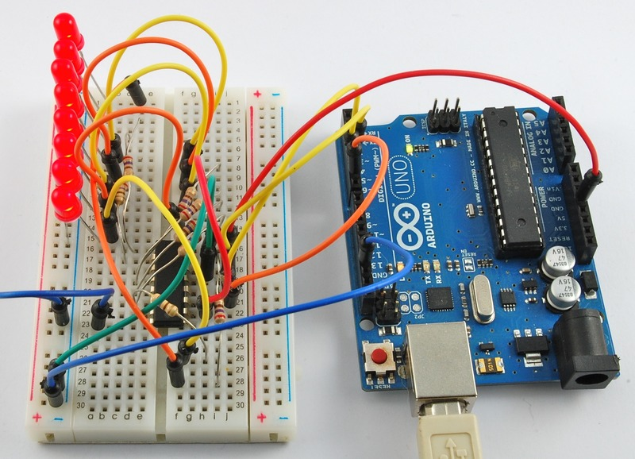
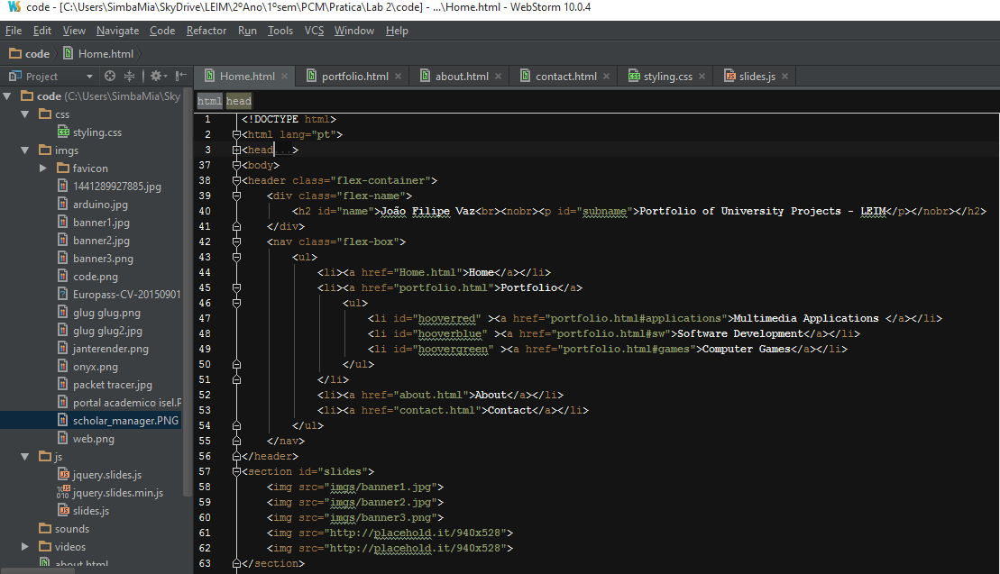
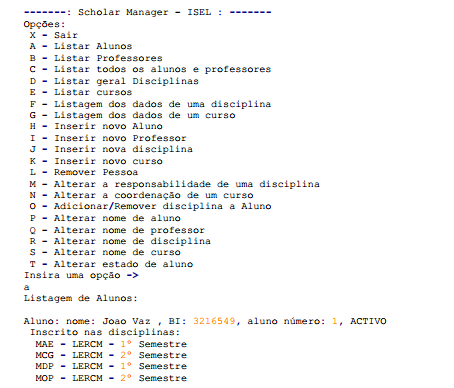

Project developed for the Course Modelation of Virtual Environments. I fully model a 3d car
using Blender. I modeled individual items such as the tires, rims, optics, chassis then assembling
the individual objects into a whole. Then Lightening effects and materials to achieve a more consistent
look and feel.

Multimedia Shop display
Using Arduino this project created a system to interact with the customer of a shop window.
The system detected the customer presence through LDR's and this created an visual and audio interaction
using Led patterns that followed a specific tune. At the same time a thermistor connected to a RGB led
represented the temperature. After the customer went away the led's would return to a random
set of patterns in order to raise customer's curiosity.

Personal Portfolio Website
Using HMTL5 + CSS3 + Javascript created a personal portfolio Webpage to
display the projects developed during the Degree Programme
Software Development
Isel Academic Portal
Project developed for the Course Information Technologies. Reproduction of the Isel's Academic Portal with a basic XHTML+CSS structure supported by Information
stored in XML with XSD validation.

Scholar Manager - Text Based Management Software
Using Java, we created a basic Scholar manager Software with the scope of modelling the school entities
(Professors, Students, courses, degrees) and their attributes. The SW also displayed the
relations between these agents (professors responsible for courses,
List of students enrolled in courses, etc..). The Software responded to text commands on command line
as first MS-DOS, Unix and AS400 applications used to.
Computer Games
Glug-Glug ZX Spectrum remake using Pygame
Remake of 1984 ZX Spectrum Game Glug-Glug with a Twist. The diver is attached to a Transtejo "Cacilheiro".
The game was developed in Python using Pygame mod.
Sokoban Java Remake
Remake of Sokoban 1981 Game using Java standard API, namely Swing.
Sokoban means literally warehouse keeper. Original game pictures were used.